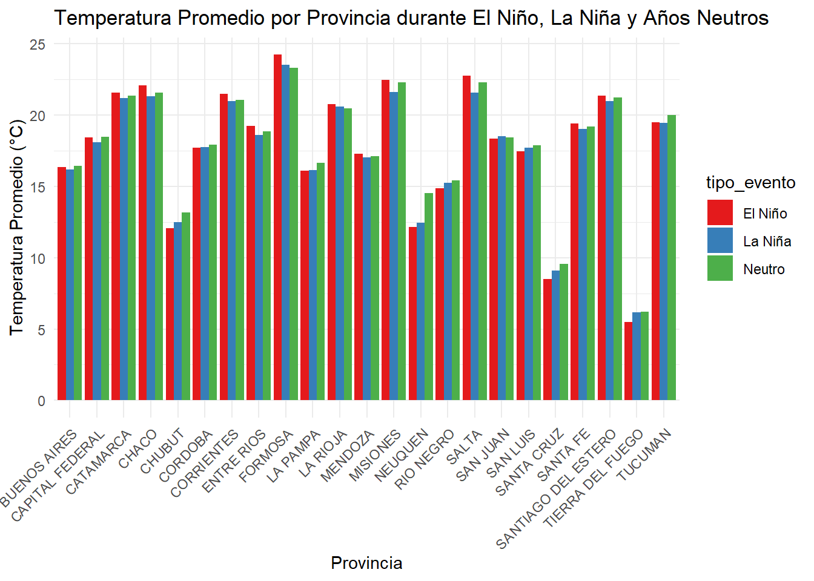

datos_precipitaciones$Fecha <-as.Date(datos_precipitaciones$Fecha, format ="%Y-%m-%d")df <- datos_estaciones %>%inner_join(datos_smn, by =c("Nombre"="NOMBRE")) %>%inner_join(datos_precipitaciones, by =c("Nro"="Estacion", "FECHA"="Fecha"))
# Convertir columnas a factordf$id_estacion <-as.factor(df$id_estacion)df$nombre_estacion <-as.factor(df$nombre_estacion)df$provincia <-as.factor(df$provincia)# Reemplazar los valores "\\N" por NAdf$precipitacion[df$precipitacion =="\\N"] <-NA# Convertir la columna a numéricodf$precipitacion <-as.numeric(df$precipitacion)
# Suponiendo que tu dataset se llama 'datos'# Filtramos eliminando NA y restringiendo los valores al rango deseadodf <- df %>%na.omit() %>%# Eliminar filas con NAfilter( presion_atmosferica >=950& presion_atmosferica <=1050, humedad >=0& humedad <=100, velocidad_viento >=0& velocidad_viento <=150, direccion_viento >=0& direccion_viento <=360, temperatura >=-35& temperatura <=50 )
2 IDEAS ❓❓❓❓❓❓
Rango de fechas (primera y ultima) de datos cargados. LORENN
¿Cuál es la humedad promedio en cada provincia? (anual) aplica a todas las variables. FRANCO
¿Qué estación registró la temperatura más alta? FEDE
¿Qué estación registró la temperatura más baja? LORENN
¿En qué provincia se registró la mayor precipitación? (todas las variables) FRANCO
Estaciones con mayor y menor altitud. FEDE
¿Existe correlaciónes? LORENN
variación estacional FRANCO
Fecha de apertura estaciones. FEDE
condiciones climáticas más extremas LORENN
¿Se observan patrones asociados a eventos como El Niño o La Niña? FRANCO
Segmentar por condiciones climaticas similares. FEDE
nombre_estacion provincia temperatura fecha
1 SANTIAGO DEL ESTERO AERO SANTIAGO DEL ESTERO 45.4 2022-01-01
2 SANTIAGO DEL ESTERO AERO SANTIAGO DEL ESTERO 45.2 2024-02-03
3 SANTIAGO DEL ESTERO AERO SANTIAGO DEL ESTERO 45.1 2022-01-01
4 LAS LOMITAS FORMOSA 45.0 2022-12-08
5 LAS LOMITAS FORMOSA 45.0 2023-11-08
6 LAS LOMITAS FORMOSA 45.0 2023-11-08
nombre_estacion provincia humedad fecha
1 AEROPARQUE AERO CAPITAL FEDERAL 100 2018-06-30
2 AEROPARQUE AERO CAPITAL FEDERAL 100 2018-06-30
3 AEROPARQUE AERO CAPITAL FEDERAL 100 2018-06-30
4 AEROPARQUE AERO CAPITAL FEDERAL 100 2018-06-30
5 AEROPARQUE AERO CAPITAL FEDERAL 100 2018-06-30
6 AEROPARQUE AERO CAPITAL FEDERAL 100 2018-06-30
Conclusiones:
Código
# Años de eventos (deberías actualizar estas listas con información confiable)años_la_nina <-c(1998:2001,2005,2006,2007,2008,2022) # Agrega todos los años de la Niñaaños_el_nino <-c(2002,2003,2009, 2010, 2014,2015,2016,2023,2024) # Agrega todos los años de El Niño# Agregar una columna al dataset para clasificar el tipo de añodatos_eventos <- df %>%mutate(tipo_evento =case_when(as.numeric(year(fecha)) %in% años_el_nino ~"El Niño",as.numeric(year(fecha)) %in% años_la_nina ~"La Niña",TRUE~"Neutro" ))
`summarise()` has grouped output by 'tipo_evento'. You can override using the
`.groups` argument.
Código
ggplot(promedios_evento, aes(x = provincia, y = temperatura_promedio, fill = tipo_evento)) +geom_bar(stat ="identity", position ="dodge") +labs(title ="Temperatura Promedio por Provincia durante El Niño, La Niña y Años Neutros",x ="Provincia",y ="Temperatura Promedio (°C)") +theme_minimal() +scale_fill_brewer(palette ="Set1") +theme(axis.text.x =element_text(angle =45, hjust =1))

2.0.1 Conclusiones:
El evento de la niña y el niño basandonos en los datos no tuvo un impacto significativo observable en estos.
Por otro lado, tambien podemos observar que la estacion impacta significativamente en las mediciones que tenemos en los datos .
Y los promedios anuales de las variables temperatura, precipitaciones y humedad se puede ver que la temperatura hay varia mucho menos a lo largo de los años
Y las provincias donde se registraron los valores mas altos para las variables mencionadas anteriormente son: para la temperatura santiago del estero y formosa, para la humedad en todas las provincias se hubo 100% de humedad
Ejecutar el código
---title: "Trabajo Práctico 2 | Grupo 2" date: "r Sys.Date()" format: htmltheme: Cosmo toc: true toc-location: right number-sections: true code-fold: truecode-tools: truesmooth-scroll: truefig-align: center toc-depth: 3lang: eseditor: visual---```{r echo = FALSE, warning = FALSE, output = FALSE}# Limpieza de datos.library(dplyr)library(DataExplorer) # Para usar func plot_introlibrary(tidyverse)library(inspectdf)# Visualización de datos.library(plotly)library(leaflet)# Análisis geoespaciallibrary(geojsonsf)library(sf)# Carga de datosdatos_smn <- readRDS("data/datos_smn.rds")datos_estaciones <- read.csv("data/estaciones.csv")datos_precipitaciones <- read.delim("data/smn_precipitaciones-1991-2024.txt", sep = ",")# APIs y tokensmapbox_token <- "pk.eyJ1IjoibG9yZW5uem8iLCJhIjoiY20xcHYyd3g2MDk0bTJxb2k4YWZvOHlmcSJ9.r4E2pcTSM89NNHBFSmvKHw"```# Trabajo Práctico 2Análisis Exploratorio de Datos de un Dataset Real## Carga y estructura de datos```{r}datos_precipitaciones$Fecha <-as.Date(datos_precipitaciones$Fecha, format ="%Y-%m-%d")df <- datos_estaciones %>%inner_join(datos_smn, by =c("Nombre"="NOMBRE")) %>%inner_join(datos_precipitaciones, by =c("Nro"="Estacion", "FECHA"="Fecha"))```Formato de columnas```{r}colnames(df)```Renombrar Columnas```{r}df <- df %>%rename( nombre_estacion = Nombre,provincia = Provincia,altura = Altura,id_estacion = Nro,latitud = Latitud,longitud = Longitud,fecha = FECHA,hora = HORA,temperatura = TEMP,humedad = HUM,presion_atmosferica = PNM,direccion_viento = DD,velocidad_viento = FF,precipitacion = Precipitacion..mm. )```Reorganizar Columnas```{r}df <- df %>% dplyr::select( id_estacion, nombre_estacion, provincia, altura, temperatura, humedad, presion_atmosferica, direccion_viento, velocidad_viento, precipitacion, latitud, longitud, hora, fecha )```Formato de datos```{r, output=FALSE, warning=FALSE}str(df)``````{r}# Convertir columnas a factordf$id_estacion <-as.factor(df$id_estacion)df$nombre_estacion <-as.factor(df$nombre_estacion)df$provincia <-as.factor(df$provincia)# Reemplazar los valores "\\N" por NAdf$precipitacion[df$precipitacion =="\\N"] <-NA# Convertir la columna a numéricodf$precipitacion <-as.numeric(df$precipitacion)```| Variable | Concepto | Tipo ||---------------------|-------------------------------|--------|| id_estacion | Identificador de estación | Factor || nombre_estacion | Nombre de estación | Factor || provincia | Provincia | Factor || altura | Altura sobre el nivel del mar | int || temperatura | Temperatura en UNIDAD ❓ | num || humedad | ❓ | num || presion_atmosferica | ❓ | num || direccion_viento | ❓ | num || velocidad_viento | ❓ | num || precipitacion | ❓ UNIDAD | num || latitud | Latitud | num || longitud | Longitud | num || hora | Hora | num || fecha | Fecha | Date |: Diccionario de variables## Identificación de errores```{r}# Verificar valores nulosdf %>%summarise(across(everything(), ~sum(is.na(.)))) %>%pivot_longer(everything(), names_to ="variable", values_to ="missing") %>%arrange(desc(missing))``````{r}# Visualizar valores faltantesplot_intro(df)```Almacenar variables categóricas y numéricas por separado.```{r}introduce(df)``````{r}plot_missing(df)``````{r}plot_bar(df)``````{r}plot_histogram(df)``````{r}plot_correlation(na.omit(df), maxcat =5L)```## Limpieza de datosid_estacion, nombre_estacion, provincia, altura, temperatura, humedad, presion_atmosferica, direccion_viento, velocidad_viento, precipitacion, latitud, longitud, hora, fecha```{r}# Suponiendo que tu dataset se llama 'datos'# Filtramos eliminando NA y restringiendo los valores al rango deseadodf <- df %>%na.omit() %>%# Eliminar filas con NAfilter( presion_atmosferica >=950& presion_atmosferica <=1050, humedad >=0& humedad <=100, velocidad_viento >=0& velocidad_viento <=150, direccion_viento >=0& direccion_viento <=360, temperatura >=-35& temperatura <=50 )```# IDEAS ❓❓❓❓❓❓1. Rango de fechas (primera y ultima) de datos cargados. LORENN2. ¿Cuál es la humedad promedio en cada provincia? (anual) aplica a todas las variables. FRANCO3. ¿Qué estación registró la temperatura más alta? FEDE4. ¿Qué estación registró la temperatura más baja? LORENN5. ¿En qué provincia se registró la mayor precipitación? (todas las variables) FRANCO6. Estaciones con mayor y menor altitud. FEDE7. ¿Existe correlaciónes? LORENN8. variación estacional FRANCO9. Fecha de apertura estaciones. FEDE10. condiciones climáticas más extremas LORENN11. ¿Se observan patrones asociados a eventos como El Niño o La Niña? FRANCO12. Segmentar por condiciones climaticas similares. FEDE```{r}df_prov <- df %>%mutate(año =year(fecha)) %>%group_by(provincia, año) %>%summarise(humedad_promedio_anual =mean(humedad),precipitaciones_promedio_anual =mean(precipitacion),temp_promedio_anual =mean(temperatura) )#ggplot(df_prov_hum , aes(x = año, y = humedad_promedio_anual, color = provincia, #group = provincia)) +# geom_line() +#labs(title = "Humedad Promedio Anual por Provincia",# x = "Año",# y = "Humedad Promedio (%)") +#theme_minimal()ggplot(df_prov, aes(x = año, y = humedad_promedio_anual)) +geom_line(color ="blue") +facet_wrap(~ provincia, ncol =4) +labs(title ="Humedad Promedio Anual por Provincia",x ="Año",y ="Humedad Promedio" ) +theme_minimal() +theme(plot.title =element_text(hjust =0.5, size =16), # Centra el títuloaxis.text.x =element_text(angle =45, hjust =1)) # Gira etiquetas del eje x para mayor legibilidad``````{r}ggplot(df_prov, aes(x = año, y = temp_promedio_anual)) +geom_line(color ="blue") +facet_wrap(~ provincia, ncol =4) +labs(title ="Temperatura Promedio Anual por Provincia",x ="Año",y ="Precipitaciones Promedio" ) +theme_minimal() +theme(plot.title =element_text(hjust =0.5, size =16), # Centra el títuloaxis.text.x =element_text(angle =45, hjust =1)) # Gira etiquetas del eje x para mayor legibilidad``````{r}ggplot(df_prov, aes(x = año, y = precipitaciones_promedio_anual)) +geom_line(color ="blue") +facet_wrap(~ provincia, ncol =4) +labs(title ="Precipitaciones Promedio Anual por Provincia",x ="Año",y ="Precipitaciones Promedio") +theme_minimal()# theme(axis.title.y = element_text(angle = 45, hjust = 1))ggplot(df_prov, aes(x = año, y = precipitaciones_promedio_anual)) +geom_line(color ="blue", size =1) +# Línea más gruesafacet_wrap(~ provincia, ncol =4, scales ="free_y") +# Escalas independientes para el eje ylabs(title ="Precipitaciones Promedio Anual por Provincia",x ="Año",y ="Precipitaciones Promedio (mm)" ) +theme_minimal() +theme(plot.title =element_text(hjust =0.5, size =16), # Centra el títuloaxis.text.x =element_text(angle =45, hjust =1) # Gira etiquetas del eje x para mayor legibilidad )``````{r}df_estacional <- df %>%mutate(mes =month(fecha), estacion_año =case_when( mes %in%c(12, 1, 2) ~"Verano", mes %in%c(3, 4, 5) ~"Otoño", mes %in%c(6, 7, 8) ~"Invierno", mes %in%c(9, 10, 11) ~"Primavera" ))%>%group_by(provincia, estacion_año) %>%summarize(temperatura_promedio =mean(temperatura, na.rm =TRUE),humedad_promedio =mean(humedad, na.rm =TRUE),precipitaciones_promedio =mean(precipitacion, na.rm =TRUE) )``````{r}ggplot(df_estacional, aes(x = provincia, y = temperatura_promedio, fill = estacion_año)) +geom_bar(stat ="identity", position ="dodge") +labs(title ="Temperatura Promedio Estacional por Provincia",x ="Provincia",y ="Temperatura Promedio (°C)") +theme_minimal() +scale_fill_brewer(palette ="Set1", name ="Estación del Año")+theme(axis.text.x =element_text(angle =45, hjust =1))``````{r}ggplot(df_estacional, aes(x = provincia, y = humedad_promedio, fill = estacion_año)) +geom_bar(stat ="identity", position ="dodge") +labs(title ="Humedad Promedio Estacional por Provincia",x ="Provincia",y ="Humedad Promedio") +theme_minimal() +scale_fill_brewer(palette ="Set1", name ="Estación del Año")+theme(axis.text.x =element_text(angle =45, hjust =1))``````{r}ggplot(df_estacional, aes(x = provincia, y = precipitaciones_promedio, fill = estacion_año)) +geom_bar(stat ="identity", position ="dodge") +labs(title ="Precipitaciones Promedio Estacional por Provincia",x ="Provincia",y ="Precipitaciones Promedio") +theme_minimal() +scale_fill_brewer(palette ="Set1", name ="Estación del Año")+theme(axis.text.x =element_text(angle =45, hjust =1))``````{r}df_max_prec <- df %>%select(nombre_estacion, provincia, precipitacion, fecha) %>%arrange(desc(precipitacion))head(df_max_prec)df_max_temp <- df %>%select(nombre_estacion, provincia, temperatura, fecha) %>%arrange(desc(temperatura))head(df_max_temp)df_max_hum <- df %>%select(nombre_estacion, provincia, humedad, fecha) %>%arrange(desc(humedad))head(df_max_hum)```Conclusiones:```{r}# Años de eventos (deberías actualizar estas listas con información confiable)años_la_nina <-c(1998:2001,2005,2006,2007,2008,2022) # Agrega todos los años de la Niñaaños_el_nino <-c(2002,2003,2009, 2010, 2014,2015,2016,2023,2024) # Agrega todos los años de El Niño# Agregar una columna al dataset para clasificar el tipo de añodatos_eventos <- df %>%mutate(tipo_evento =case_when(as.numeric(year(fecha)) %in% años_el_nino ~"El Niño",as.numeric(year(fecha)) %in% años_la_nina ~"La Niña",TRUE~"Neutro" ))``````{r}promedios_evento <- datos_eventos %>%group_by(tipo_evento, provincia) %>%summarize(temperatura_promedio =mean(temperatura, na.rm =TRUE),humedad_promedio =mean(humedad, na.rm =TRUE),presion_promedio =mean(presion_atmosferica, na.rm =TRUE),velocidad_viento_promedio =mean(velocidad_viento, na.rm =TRUE),precipitacion_promedio =mean(precipitacion, na.rm =TRUE) )``````{r}ggplot(promedios_evento, aes(x = provincia, y = temperatura_promedio, fill = tipo_evento)) +geom_bar(stat ="identity", position ="dodge") +labs(title ="Temperatura Promedio por Provincia durante El Niño, La Niña y Años Neutros",x ="Provincia",y ="Temperatura Promedio (°C)") +theme_minimal() +scale_fill_brewer(palette ="Set1") +theme(axis.text.x =element_text(angle =45, hjust =1))```### Conclusiones:El evento de la niña y el niño basandonos en los datos no tuvo un impacto significativo observable en estos.Por otro lado, tambien podemos observar que la estacion impacta significativamente en las mediciones que tenemos en los datos .Y los promedios anuales de las variables temperatura, precipitaciones y humedad se puede ver que la temperatura hay varia mucho menos a lo largo de los añosY las provincias donde se registraron los valores mas altos para las variables mencionadas anteriormente son: para la temperatura santiago del estero y formosa, para la humedad en todas las provincias se hubo 100% de humedad